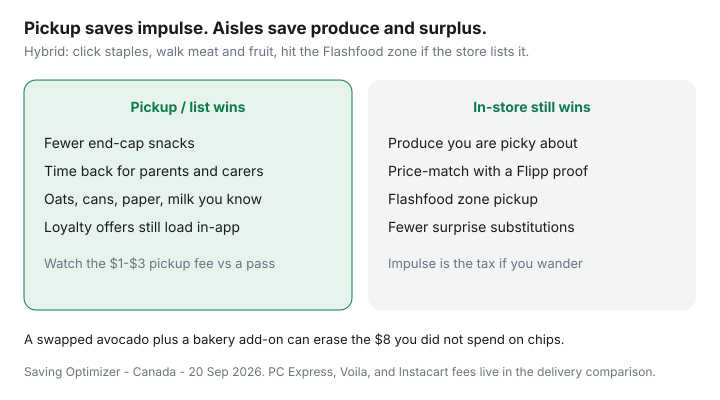

Food & Groceries · Canada
Grocery pickup vs in-store in Canada: impulse control vs substitution risk
Pickup is how Canadian parents stop buying the end-cap chocolate. It is also how a rock-hard avocado and a “similar” yogurt appear in the tote while the Flashfood chicken you wanted stays in a fridge you never walked past. The saving is impulse control. The leak is substitution, produce, missed matches, and surplus you skipped.
This is a hybrid guide for PC Express, Voilà pickup, and similar: when the list wins, when your eyes still need the aisle, and how to fold a Flashfood zone into the same trip. Fee tables for delivery passes live in PC Express vs Voilà vs Instacart. This page is the behaviour.
Disclosure: PC Express Pass (including via PC Insiders Mastercard) and Voilà passes are offer types. Saving Optimizer may earn a commission if we later add card or portal links. We do not currently claim Loblaw or Empire partnerships. Run the last four invoices before you buy a pass.
Key takeaways
- A curated pickup list is a powerful anti-impulse tool. Treat it like a budget.
- Substitutions and out-of-stocks can erase the snack money you did not spend.
- Walk produce and meat you care about. Click the boring staples.
- Flashfood is still a store visit. Plan the zone on the same loop as pickup if the store lists food.
- Load loyalty offers before you hit pay. Pickup is not a loyalty holiday.
Impulse savings from curated online lists
Build the list from the fridge audit and Flipp, not from the app’s “inspired” row. If it is not on Sunday’s paper, it does not go in the tote. Households that overspend in-store on bakery and drinks often save more on pickup than they lose on a $1 fee.
Parents and carers: the win is not 80¢. It is not taking two tired kids through the cereal aisle. Time value is real. Just do not let the app refill the cart with premium SKUs you never buy at No Frills.
Substitution and out-of-stock pitfalls
| Item type | Suggested rule |
|---|---|
| Store-brand oats, cans, paper | Allow a similar store brand. Refund if they jump to a premium label. |
| Specific diet SKUs (gluten-free, halal) | Refund if unavailable. No “close enough.” |
| Sale flyer items you price-matched in your head | Confirm the sale price is in the app. Substitutions often lose the deal. |
| Produce you are picky about | Do not put it on pickup. Walk the aisle. |
Check the bag in the parking lot. In-app refunds exist; arguing later from the couch is harder. Independent testers (Just Keeping It Real and others) have found store apps cheaper than Instacart on matched baskets — substitutions are a quality issue even when the fee is small.
Produce quality: when to still walk the aisle
Berries, herbs, avocados, ripe tomatoes, bakery you will eat today: your hands beat a picker on a timer. Cabbage, carrots, bagged apples, and frozen veg are pickup-safe. If produce is half your joy and half your waste, walk it — then run FIFO at home.
Time value for parents and carers
A 40-minute shop with children is not a 40-minute shop. Pickup or a hybrid can be the cheaper childcare. A pass makes sense when you were already paying slot fees every week, not when you pickup twice a year. Break-even sketches are in the delivery comparison.
Hybrid model: pickup staples + quick fresh stop + Flashfood

- Order staples for a pickup slot at the banner you already shop.
- Walk meat and produce for 10 minutes. No extra aisles.
- If Flashfood has a tray you planned, pick it up in the zone — prepaid in that app, not in the Express tote. See the Flashfood guide.
- Do not add bakery “because you are already here” unless it is on the list.
Loblaw-specific online pitfalls (Optimum loading, Express fees, online-only prices) are in Saving at Loblaw online.
Loyalty offer loading still required
PC Optimum, Scene+, and Moi do not care that you stayed in the car. Open the app, load weekly and personalized offers, confirm they show at checkout. Gift-card payments and some event bonuses still have exclusions — gift-card cashback. Price matching with a Flipp screenshot is still a human-till sport: Won’t Be Beat.
Sources & date stamps
- Milesopedia-style PC Express fee explainers: future pickup often ~$1; same-day delivery much higher; pass $9.99 / $99.99 (reviewed Sep 2026).
- Just Keeping It Real, Canadian grocery delivery tests (2026) — store apps vs Instacart on matched baskets.
- Flashfood: in-store zone pickup, separate from Express (our Flashfood guide).
- Scene+ / PC Optimum public help: load offers for online and in-store.
Frequently asked questions
Is grocery pickup cheaper than shopping in store in Canada?
Pickup often saves money on impulse snacks and saves time. It can cost a small slot fee (PC Express future pickup is commonly about $1 without a pass) and you can lose on substitutions, weak produce, and missed in-store matches or Flashfood. Hybrid is usually the honest win.
Why are pickup substitutions a problem?
A shopper or warehouse may swap brands, sizes, or ripeness. A $1 avocado becomes two hard ones, or a name-brand swap blows the unit price. Lock 'refund if unavailable' on sensitive items and check the bag in the parking lot.
Should I still walk the produce aisle?
Yes, if you are picky about berries, herbs, avocados, or bakery. Click oats, cans, paper, and milk. That is the hybrid model: pickup staples plus a 10-minute fresh stop.
Can I use Flashfood with grocery pickup?
Flashfood is an in-store zone with its own app payment and window. It is not in the PC Express tote. Plan a store visit if you want surplus meat, or skip Flashfood that week.
Do I still need to load PC Optimum or Scene+ for pickup?
Yes. Online checkout does not magically apply unloaded offers. Open the banner app, load offers, confirm they appear before you pay. Gift cards and some event bonuses still have exclusions.